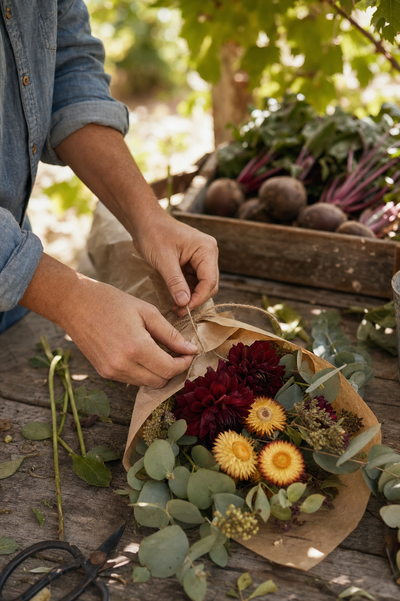
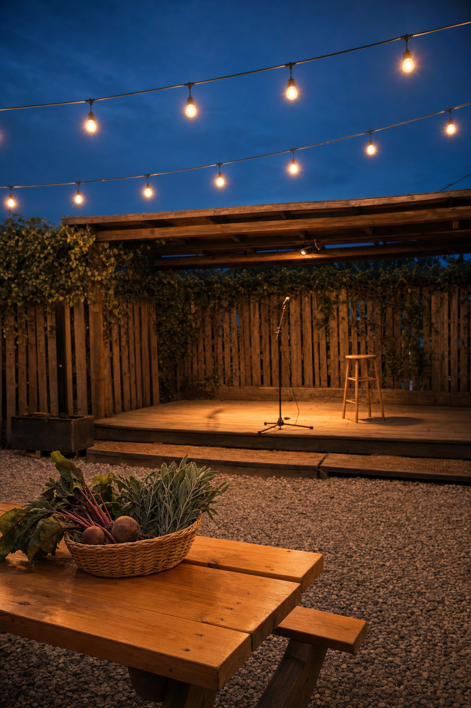

01 · The read
Thursday evenings, Sunday afternoons.
Hannah, Matt — Nelson Taylor here. I direct and shoot brand content in Dallas–Fort Worth. Gabby Bailey's Sept. 11 story in Community Impact, on the new farmers market at Harvest House, is what sent me to your site.
Produce, flowers, baked goods and handmade things from local growers and makers, Thursdays from 5 to 8 and Sundays from noon to 4, in the yard your site calls “the backyard of Denton.” Congratulations on the ribbon cutting with the Denton Chamber on Oct. 14, too.
A market is one of the few things that looks different every hour it runs. Tables go up in late-morning light, the stalls fill at noon, the yard slows down through the afternoon and the bulbs come on at dusk. So the idea is simple: one market day, filmed hour by hour.

02 · What we'd shoot
Six packets, one day.
A Sunday market, on a day you choose, from vendor setup to dusk: hands, goods, tables, light and the yard itself. Vendors are their own businesses, so on camera they're hands and goods only, with no names, no stall signs and no faces, and whether a stall takes part is a conversation between you and them. Guests appear as hands at most.
-
No. 1Sunday · Denton
Packet 1 · 11 a.m., setup The tables go up
Tents opening along the fence, crates set down on bare tables, the first light moving across the gravel.
Creative direction — treatment frames, not final footage. -
No. 2Sunday · Denton
Packet 2 · noon, the stalls Hands choose
Beets lifted by their greens, a squash turned over in a palm, a jar of honey held up to the sun. Close and slow.
Creative direction — treatment frames, not final footage. -
No. 3Sunday · Denton
Packet 3 · early afternoon, the flowers Stems in paper
A bouquet wrapped and tied at the table, start to finish, in one vertical take.
Creative direction — treatment frames, not final footage. -
No. 4Sunday · Denton
Packet 4 · mid-afternoon, the bread Under the linen
A cloth lifted off a basket of loaves; flour and crumbs on the wood.
Creative direction — treatment frames, not final footage. -
No. 5Sunday · Denton
Packet 5 · late afternoon, the yard The long light
Picnic tables, vines on the fence, the corners of the yard as the shadows stretch across the gravel.
Creative direction — treatment frames, not final footage. -
No. 6Sunday · Denton

Packet 6 · dusk, the stage Lights up
The string lights coming on, the stage empty and lit, the last basket left on a table.
Creative direction — treatment frames, not final footage.
All day, the A7RV builds a stills bank from the same stalls and the same light, for the site, the grid and anything else that needs a photograph.
03 · The format
The backyard hour.
Hannah told Community Impact she hopes the market grows into something Denton can enjoy weekly. A weekly market suits a weekly post, so the day is cut into a format: one stall, one corner of the yard, one hour of light at a time, across the quarter.
Each one opens on the same small move, a hand setting something down on a wooden table, and then the hour takes over. Honey at noon. Stems after lunch. The long light on the picnic tables. The bulbs at dusk.
The opening stays fixed and the hour keeps changing, which gives the grid a rhythm without anyone on your team having to perform for the lens.
04 · The day
What the day is.
Here it is, plainly.
- 1One shoot day at Harvest HouseI direct and shoot it myself, in Denton, on a market day you pick.
- 2Sony FX6 + Sony A7RVCinema motion from the FX6; stills and hybrid from the A7RV.
- 3Vertical-firstEvery deliverable cut 9:16 for Reels, TikTok and Shorts.
- 4An edited set of vertical videos + a stills bankAll from the same day, built to run for a quarter.
- 5Two rounds of editsAbout two weeks from the shoot to delivery.
Anything past that, we'd talk through on a call.
05 · Behind the camera
Who'd be shooting.
I'm Nelson Taylor, and Taylormade Creative is my studio in Dallas–Fort Worth. I've spent fourteen years in design and creative direction, and most of my work now is brand content that I direct, shoot on the FX6 and A7RV, and edit myself.
Recent work includes TONI&GUY Academy and Dreamcatchers Hair; over the years my client work has included Lava Cantina and KFC, and I shipped an iOS app, Run It UP! Dallas.
A market table is someone's livelihood, so I shoot it quietly, from the edges of the stalls and out of the way of anyone buying or selling.
06 · Whenever it suits
Take it at your own pace. There's no timeline on any of this.
If the idea feels like Harvest House, I'd be glad to spend twenty minutes on a call and walk the market day through with you, hour by hour. Cross out what doesn't fit, and add whatever I've missed.
If the season is already full, “not yet” is a perfectly good answer.
Write to NelsonFounder & Creative Director · Taylormade Creative
(817) 707‑1291 · taylormademd@gmail.com
www.taylormadecreative.net · @taylormade_creative